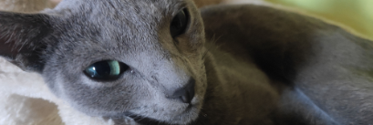
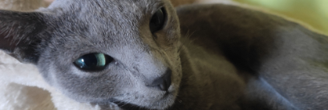

Polina - ruská modrá kočka
Poli se narodila 20.května 2019 v prvním vrhu ruské modré kočky Lindy Mollis Felis v Českých Heřmanicích. Netrvalo dlouho a její velké zelené oči a elegantní křivky přilákaly první zájemce.
Slovo dalo slovo a hned při první návštěvě bylo jasné, že to je ideální kočičí parťák na dlouhé zimní večery.
O tři měsíce později už vyrážela POli na svoje první velké dobrodružství daleko od své kočičí mámy do nové rodiny.


 
